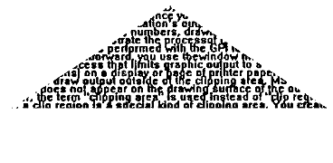

Clipping enables the PM to discard parts of a picture that lie outside a specified clipping boundary. The parts of the picture enclosed by the boundary are said to be inside the clipping area. A clipping area might be a single rectangle or a complex shape, depending on the method used to define it.
Note: In this chapter, the word area does not refer to an area primitive; it describes the shape or shapes used for clipping graphics output.
If an application attempts to draw outside of a clipping area, the operating system ensures that the output does not appear on the drawing surface of the output device. For example, if an application defined a triangular clipping area before drawing text output, all text outside of the triangle would be discarded, even though an entire page of text was defined. The following figure illustrates the result.
Triangular Clip Path
Clipping boundaries are defined by the application. The PM performs some clipping automatically when, for example, your application's graphic output is clipped to fit a client window area or the device's output area for a hardcopy device.